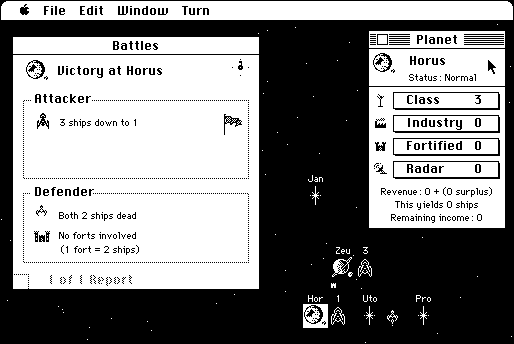

Download
Galactic_Frontiers_102.zip (348K) Galactic Frontiers 1.0.2 repackaged into a zipped hfs disk image and checksum file. The disk image can be mounted with Mini vMac.
Galactic_Frontiers_102.sit (336K) Galactic Frontiers 1.0.2 in the original format.
copyright: Human Media Ltd.
mod date: Nov 23, 1995
license: Freeware, former shareware
official url :
Lowke Media, Archive
A “turn-based strategy game set in space”, “for one to four players, where each player is a contender vying for supreme power over the galaxy.”

In brief testing, it seemed to frequently crash in System 7, but then worked without problem in System 6 (in Macintosh Plus emulation). A suggestion for beginners: besides setting Game Type to beginner in the “Game Setup” dialog, click the options button, and in the Species screen, greatly increase the Humanoid settings, perhaps even to 200%, to make learning the game more fun. I’m not convinced it is even possible to win in the default settings, but then, I’m just a beginner.
If you find these downloads useful, please consider helping the Gryphel Project, which hosts them.
Here are the md5 checksums for the downloads, signed with Gryphel Key 5:
--------- GRY SIGNED TEXT --------- 8937bcbc90fc68f986fa7bc8d556c9c9 Galactic_Frontiers_102.zip 56817e6f71e69bf1713cc7e0f47040bb Galactic_Frontiers_102.sit ------- BEGIN GRY SIGNATURE ------- Gry/4Xa8CFcUzxdN/OP+qb4L4r9qDG0z+Z289F3+fKOrVVB6eHiNVZsepoC08/mR KydKZszw2XvY2KwF2mREpDvYiiwHi6R8aEHxbdGZjf2CVWpKJSMYpK8g6ECnevOG +2jrG9FdnYBrN5oIONP/VffltNqn/QPLZYJM/75uk5QgKiMdT8I4vaN8svCtClx4 -------- END GRY SIGNATURE --------